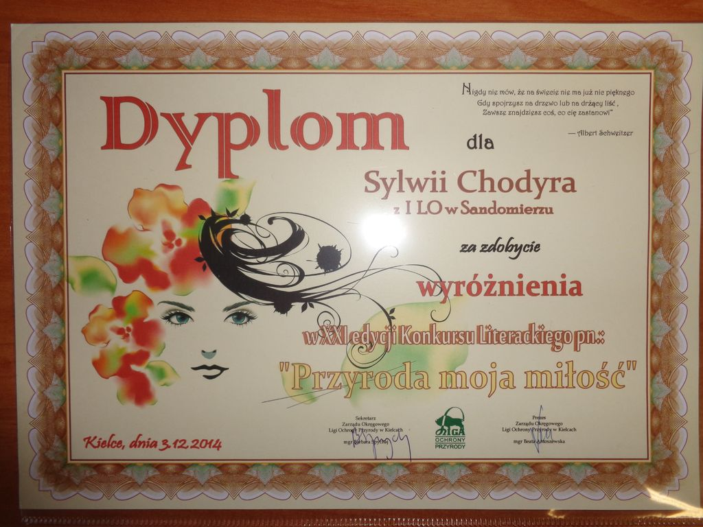

3 grudnia 2014 r. w Kieleckim Centrum Kultury odbyło się wręczenie nagród w XXI edycji konkursu literackiego pn.: "Przyroda moja miłość".Uroczystość podsumowania Ogólnopolskiego Konkursu Lierackiego została uświetniona montażem słowno-muzycznym w wykonaniu aktorów Zespołu Teatralnego pn. "Podwórkowa Arena Absurdu".
Drugie miejsce w konkursie za esej pt.: "Las- moja miłość" zdobyła Magdalena Bednarz z klasy 2F, wyróżnienia zdobyły: Dominika Jóźwik z kl. 3D, Daria Mazur z kl. 2F za wiersz "W ziemskim raju", Sylwia Chodyra z kl. 3E za wiersz pt. "Ojczyzna o poranku" i Aleksandra Michałowska z kl. 2F za esej pt. "Las- moja miłość". Wszystkie wymienione osoby otrzymały nagrody rzeczowe oraz almanach, w którym znajdują się ich utwory. Opiekunem młodzieży jest pani profesor Barbara Sobieraj.
